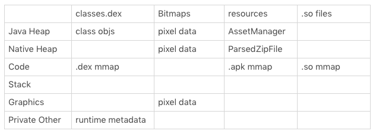
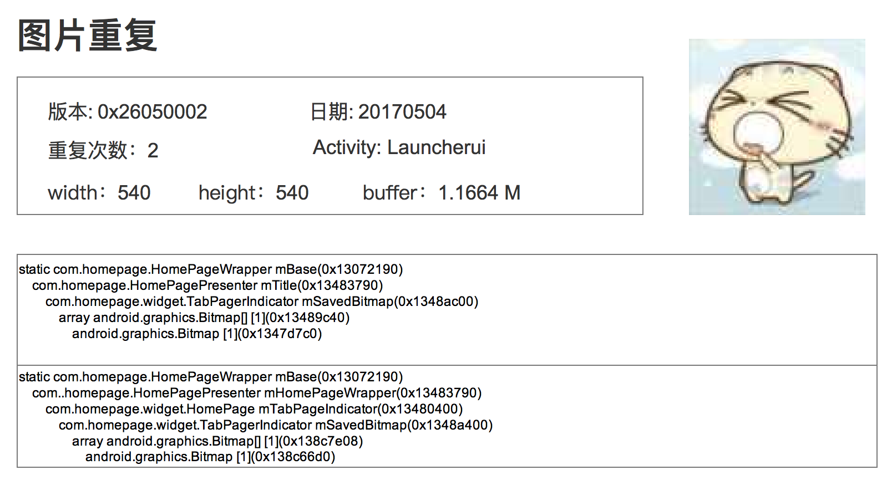
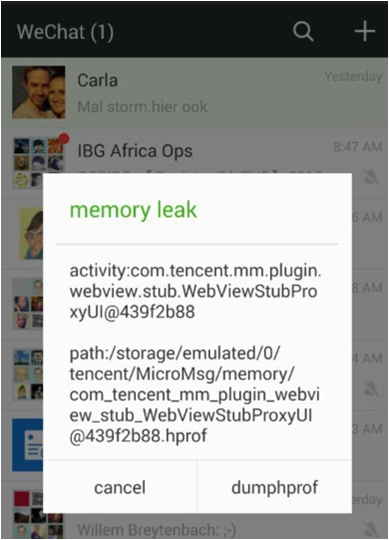
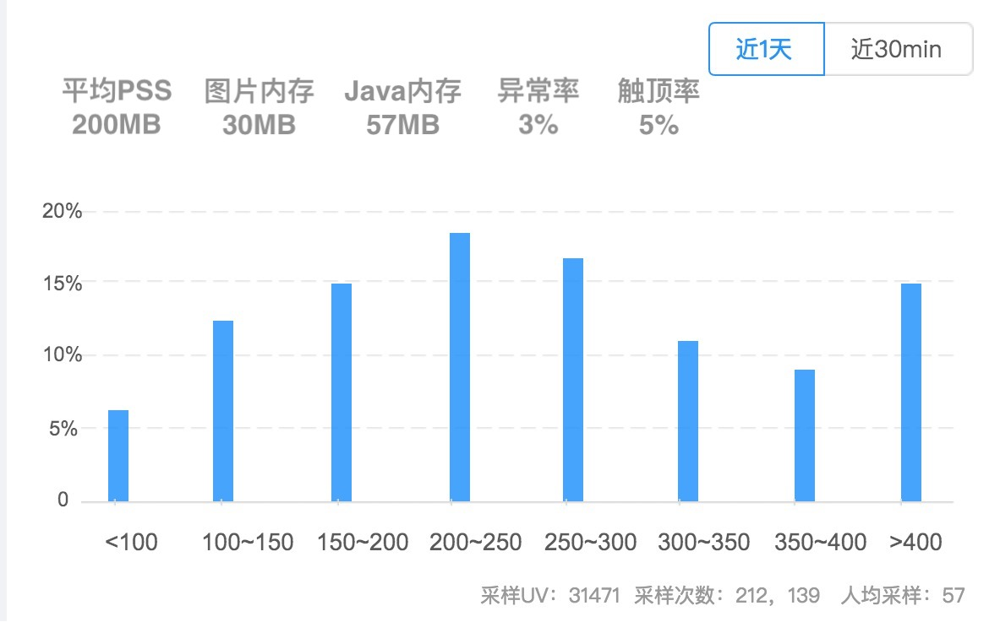

在掌握内存相关的背景知识后，下一步你肯定想着手开始优化内存的问题了。不过在真正开始做内存优化之前，需要先评估内存对应用性能的影响，我们可以通过崩溃中“异常退出” 和 OOM 的比例进行评估。另一方面，低内存设备更容易出现内存不足引起的异常和卡顿，我们也可以通过查看应用中用户的手机内存在 2GB 以下所占的比例来评估。
所以在优化前要先定好自己的目标，这一点非常关键。比如针对 512MB 的设备和针对 2GB 以上的设备，完全是两种不同的优化思路。如果我们面向东南亚、非洲用户，那对内存优化的标准就要变得更苛刻一些。
铺垫了这么多，下面我们就来看看内存优化都有哪些方法吧。
内存优化探讨
那要进行内存优化，应该从哪里着手呢？我通常会从设备分级、Bitmap 优化和内存泄漏这三个方面入手。
1. 设备分级
相信你肯定遇到过，同一个应用在 4GB 内存的手机运行得非常流畅，但在 1GB 内存的手机就不一定可以做到，而且在系统空闲和繁忙的时候表现也不太一样。
内存优化首先需要根据设备环境来综合考虑，专栏上一期我提到过很多同学陷入的一个误区：“内存占用越少越好”。其实我们可以让高端设备使用更多的内存，做到针对设备性能的好坏使用不同的内存分配和回收策略。
当然这需要有一个良好的架构设计支撑，在架构设计时需要做到以下几点。
- 设备分级。使用类似 device-year-class 的策略对设备分级，对于低端机用户可以关闭复杂的动画，或者是某些功能；使用 565 格式的图片，使用更小的缓存内存等。在现实环境下，不是每个用户的设备都跟我们的测试机一样高端，在开发过程我们要学会思考功能要不要对低端机开启、在系统资源吃紧的时候能不能做降级。
下面我举一个例子。我们知道 device-year-class 会根据手机的内存、CPU 核心数和频率等信息决定设备属于哪一个年份，这个示例表示对于 2013 年之后的设备可以使用复杂的动画，对于 2010 年之前的低端设备则不添加任何动画。
if (year >= 2013) { // Do advanced animation} else if (year >= 2010) { // Do simple animation} else { // Phone too slow, don't do any animations}-
缓存管理。我们需要有一套统一的缓存管理机制，可以适当地使用内存；当“系统有难”时，也要义不容辞地归还。我们可以使用 OnTrimMemory 回调，根据不同的状态决定释放多少内存。对于大项目来说，可能存在几十上百个模块，统一缓存管理可以更好地监控每个模块的缓存大小。
-
进程模型。一个空的进程也会占用 10MB 的内存，而有些应用启动就有十几个进程，甚至有些应用已经从双进程保活升级到四进程保活，所以减少应用启动的进程数、减少常驻进程、有节操的保活，对低端机内存优化非常重要。
-
安装包大小。安装包中的代码、资源、图片以及 so 库的体积，跟它们占用的内存有很大的关系。一个 80MB 的应用很难在 512MB 内存的手机上流畅运行。这种情况我们需要考虑针对低端机用户推出 4MB 的轻量版本，例如 Facebook Lite、今日头条极速版都是这个思路。
安装包中的代码、图片、资源以及 so 库的大小跟内存究竟有哪些关系？你可以参考下面的这个表格。

2. Bitmap 优化
Bitmap 内存一般占应用总内存很大一部分，所以做内存优化永远无法避开图片内存这个“永恒主题”。
即使把所有的 Bitmap 都放到 Native 内存，并不代表图片内存问题就完全解决了，这样做只是提升了系统内存利用率，减少了 GC 带来的一些问题而已。
那我们回过头来看看，到底该如何优化图片内存呢？我给你介绍两种方法。
方法一，统一图片库。
图片内存优化的前提是收拢图片的调用，这样我们可以做整体的控制策略。例如低端机使用 565 格式、更加严格的缩放算法，可以使用 Glide、Fresco 或者采取自研都可以。而且需要进一步将所有 Bitmap.createBitmap、BitmapFactory 相关的接口也一并收拢。
方法二，统一监控。
在统一图片库后就非常容易监控 Bitmap 的使用情况了，这里主要有三点需要注意。
-
大图片监控。我们需要注意某张图片内存占用是否过大，例如长宽远远大于 View 甚至是屏幕的长宽。在开发过程中，如果检测到不合规的图片使用，应该立即弹出对话框提示图片所在的 Activity 和堆栈，让开发同学更快发现并解决问题。在灰度和线上环境下可以将异常信息上报到后台，我们可以计算有多少比例的图片会超过屏幕的大小，也就是图片的“超宽率”。
-
重复图片监控。重复图片指的是 Bitmap 的像素数据完全一致，但是有多个不同的对象存在。这个监控不需要太多的样本量，一般只在内部使用。之前我实现过一个内存 Hprof 的分析工具，它可以自动将重复 Bitmap 的图片和引用链输出。下图是一个简单的例子，你可以看到两张图片的内容完全一样，通过解决这张重复图片可以节省 1MB 内存。

- 图片总内存。通过收拢图片使用，我们还可以统计应用所有图片占用的内存，这样在线上就可以按不同的系统、屏幕分辨率等维度去分析图片内存的占用情况。在 OOM 崩溃的时候，也可以把图片占用的总内存、Top N 图片的内存都写到崩溃日志中，帮助我们排查问题。
讲完设备分级和 Bitmap 优化，我们发现架构和监控需要两手抓，一个好的架构可以减少甚至避免我们犯错，而一个好的监控可以帮助我们及时发现问题。
3. 内存泄漏
内存泄漏简单来说就是没有回收不再使用的内存，排查和解决内存泄漏也是内存优化无法避开的工作之一。
内存泄漏主要分两种情况，一种是同一个对象泄漏，还有一种情况更加糟糕，就是每次都会泄漏新的对象，可能会出现几百上千个无用的对象。
很多内存泄漏都是框架设计不合理所导致，各种各样的单例满天飞，MVC 中 Controller 的生命周期远远大于 View。优秀的框架设计可以减少甚至避免程序员犯错，当然这不是一件容易的事情，所以我们还需要对内存泄漏建立持续的监控。
- Java 内存泄漏。建立类似 LeakCanary 自动化检测方案，至少做到 Activity 和 Fragment 的泄漏检测。在开发过程，我们希望出现泄漏时可以弹出对话框，让开发者更加容易去发现和解决问题。内存泄漏监控放到线上并不容易，我们可以对生成的 Hprof 内存快照文件做一些优化，裁剪大部分图片对应的 byte 数组减少文件大小。比如一个 100MB 的文件裁剪后一般只剩下 30MB 左右，使用 7zip 压缩最后小于 10MB，增加了文件上传的成功率。

-
OOM 监控。美团有一个 Android 内存泄露自动化链路分析组件Probe，它在发生 OOM 的时候生成 Hprof 内存快照，然后通过单独进程对这个文件做进一步的分析。不过在线上使用这个工具风险还是比较大，在崩溃的时候生成内存快照有可能会导致二次崩溃，而且部分手机生成 Hprof 快照可能会耗时几分钟，这对用户造成的体验影响会比较大。另外，部分 OOM 是因为虚拟内存不足导致，这块需要具体问题具体分析。
-
Native 内存泄漏监控。上一期我讲到 Malloc 调试（Malloc Debug）和 Malloc 钩子（Malloc Hook）似乎还不是那么稳定。在 WeMobileDev 最近的一篇文章《微信 Android 终端内存优化实践》中，微信也做了一些其他方案上面的尝试。
-
针对无法重编 so 的情况，使用了 PLT Hook 拦截库的内存分配函数，其中 PLT Hook 是 Native Hook 的一种方案，后面我们还会讲到。然后重定向到我们自己的实现后记录分配的内存地址、大小、来源 so 库路径等信息，定期扫描分配与释放是否配对，对于不配对的分配输出我们记录的信息。
-
针对可重编的 so 情况，通过 GCC 的“-finstrument-functions”参数给所有函数插桩，桩中模拟调用栈入栈出栈操作；通过 ld 的“–wrap”参数拦截内存分配和释放函数，重定向到我们自己的实现后记录分配的内存地址、大小、来源 so 以及插桩记录的调用栈此刻的内容，定期扫描分配与释放是否配对，对于不配对的分配输出我们记录的信息。
开发过程中内存泄漏排查可以使用 Androd Profiler 和 MAT 工具配合使用，而日常监控关键是成体系化，做到及时发现问题。
坦白地说，除了 Java 泄漏检测方案，目前 OOM 监控和 Native 内存泄漏监控都只能做到实验室自动化测试的水平。微信的 Native 监控方案也遇到一些兼容性的问题，如果想达到灰度和线上部署，需要考虑的细节会非常多。Native 内存泄漏检测在 iOS 会简单一些，不过 Google 也在一直优化 Native 内存泄漏检测的性能和易用性，相信在未来的 Android 版本将会有很大改善。
内存监控
前面我也提了内存泄漏的监控存在一些性能的问题，一般只会对内部人员和极少部分的用户开启。在线上我们需要通过其他更有效的方式去监控内存相关的问题。
1. 采集方式
用户在前台的时候，可以每 5 分钟采集一次 PSS、Java 堆、图片总内存。我建议通过采样只统计部分用户，需要注意的是要按照用户抽样，而不是按次抽样。简单来说一个用户如果命中采集，那么在一天内都要持续采集数据。
2. 计算指标
通过上面的数据，我们可以计算下面一些内存指标。
内存异常率：可以反映内存占用的异常情况，如果出现新的内存使用不当或内存泄漏的场景，这个指标会有所上涨。其中 PSS 的值可以通过 Debug.MemoryInfo 拿到。
内存 UV 异常率 = PSS 超过 400MB 的 UV / 采集 UV触顶率：可以反映 Java 内存的使用情况，如果超过 85% 最大堆限制，GC 会变得更加频繁，容易造成 OOM 和卡顿。
内存 UV 触顶率 = Java 堆占用超过最大堆限制的 85% 的 UV / 采集 UV其中是否触顶可以通过下面的方法计算得到。
long javaMax = runtime.maxMemory();long javaTotal = runtime.totalMemory();long javaUsed = javaTotal - runtime.freeMemory();// Java 内存使用超过最大限制的 85%float proportion = (float) javaUsed / javaMax;一般客户端只上报数据，所有计算都在后台处理，这样可以做到灵活多变。后台还可以计算平均 PSS、平均 Java 内存、平均图片占用这些指标，它们可以反映内存的平均情况。通过平均内存和分区间内存占用这些指标，我们可以通过版本对比来监控有没有新增内存相关的问题。

因为上报了前台时间，我们还可以按照时间维度看应用内存的变化曲线。比如可以观察一下我们的应用是不是真正做到了“用时分配，及时释放”。如果需要，我们还可以实现按照场景来对比内存的占用。
3. GC 监控
在实验室或者内部试用环境，我们也可以通过 Debug.startAllocCounting 来监控 Java 内存分配和 GC 的情况，需要注意的是这个选项对性能有一定的影响，虽然目前还可以使用，但已经被 Android 标记为 deprecated。
通过监控，我们可以拿到内存分配的次数和大小，以及 GC 发起次数等信息。
long allocCount = Debug.getGlobalAllocCount();long allocSize = Debug.getGlobalAllocSize();long gcCount = Debug.getGlobalGcInvocationCount();上面的这些信息似乎不太容易定位问题，在 Android 6.0 之后系统可以拿到更加精准的 GC 信息。
// 运行的 GC 次数Debug.getRuntimeStat("art.gc.gc-count");// GC 使用的总耗时，单位是毫秒Debug.getRuntimeStat("art.gc.gc-time");// 阻塞式 GC 的次数Debug.getRuntimeStat("art.gc.blocking-gc-count");// 阻塞式 GC 的总耗时Debug.getRuntimeStat("art.gc.blocking-gc-time");需要特别注意阻塞式 GC 的次数和耗时，因为它会暂停应用线程，可能导致应用发生卡顿。我们也可以更加细粒度地分应用场景统计，例如启动、进入朋友圈、进入聊天页面等关键场景。
总结
在具体进行内容优化前，我们首先要问清楚自己几个问题，比如我们要优化到什么目标、内存对我们造成了多少异常和卡顿。只有在明确了应用的现状和优化目标后，我们才能去进行下一步的操作。
在探讨了内存优化的思路时，针对不同的设备、设备不同的情况，我们希望可以给用户不同的体验。这里我主要讲到了关于 Bitmap 内存优化和内存泄漏排查、监控的一些方法。最后我提到了怎样在线上监控内存的异常情况，通常内存异常率、触顶率这些指标对我们很有帮助。
目前我们在 Native 泄漏分析上做的还不是那么完善，不过做优化工作的时候，我特别喜欢用演进的思路来看问题。用演进的思路来看，即使是 Google， 在时机不成熟时也会做一些权衡和妥协。换到我们个人身上，等到时机成熟或者我们的能力达到了，就需要及时去还这些“技术债务”。
课后作业
看完我分享的内存优化的方法后，相信你也肯定还有很多好的思路和方法，今天的课后作业是分享一下你的内存优化“必杀技”，在留言区分享一下今天学习、练习的收获与心得。
在文中我提到 Hprof 文件裁剪和重复图片监控，这是很多应用目前都没有做的，而这两个功能也是微信的 APM 框架 Matrix 中内存监控的一部分。Matrix 是我一年多前在微信负责的最后一个项目，也付出了不少心血，最近听说终于准备开源了。
那今天我们就先来练练手，尝试使用 HAHA 库快速判断内存中是否存在重复的图片，并且将这些重复图片的 PNG、堆栈等信息输出。最终的实现可以通过向Sample发送 Pull Request。
COMMUNITY NOTES
读者评论
看评论有部分同学对内存这两篇的内容主题提出了疑问，说是内存优化的主题关注内存监控的内容太多了。邵文同学已经在下面的评论里有部分回复了，我这里总结一下原因。首先我们并没有很直接的去给出很多优化的案例，比如评论里提到的hook gc来避免gc引起的memory churn的技术，或者常见的引起内存泄漏几种情况的解决、数据结构优化(arraymap等)，更换序列化方案，view复用，object pool等优化方法，也没有具体的去讲解内存相关的操作系统概念和Android虚拟机heap space的结构和allocator的执行原理，这些内容大部分网上有很多不错的帖子进行了很详细的讲解，而且限于篇幅我们把内容关注在我们经常遇到的问题上，就是我们如何去监控不当的内存使用，比如发生OOM或者短时间频繁的GC产生卡顿的时候，如果我们没有具体的内存监控信息是无法判断产生问题的原因，这也是我们在实际工作中遇到的问题，也是这两篇内容关注的点，如果同学有想了解的内容可以在留言里提出来，看大家具体对哪些文章里没有提到的内容感兴趣，可以讨论一下。
文哥，看了二楼和三楼的回答，感觉他们想表达的意思学习是一个循序渐进的过程，一上来就“跳级式”的领讲搞的大家很慌，因为毕竟大多数人的水平没这么高，很多人可能都是一脸懵逼的进来，一脸懵逼的出去。而你所说的有些网上都有很成熟的帖子或者文章，但是能在看这篇文章的时候去搜的又能有几个呢？我提个建议哈，就是开讲的过程中，如果需要打基础的知识，能不能贴个链接，引导式学习
内存优化的主题是监控？
说下看了几篇文章的感受，可能确实是实力差距，看完后感觉实用性太差，都是讲的一些高大上的理论和市面上大部分公司都用不到的东西，没有一个循序渐进的过程或者引导，毕竟交钱来参加高手课的水平大部分都是菜鸟啊。楼上有个建议很好，讲这篇文章前先把一些用到的基础知识贴一下链接。看来真的是高手课，高到云端了，很难触及的那种。
感觉主题有一点跑偏，在监控内存泄露的前提下，应该从怎么防止内存泄露着手，我感觉会更实用，因为监控不是每个公司都涉及的，但是防止内存泄露应该是每个程序员应该必备的。我感觉可以多来一点实现思路和怎么预防泄露已经常见的一些泄露点。虽然网上有很多帖子可看，但是有以下一些问题，零散、正确性、思路、如何验证等等问题，既然大家都来买课我想也是奔着课程的专业程度来的，所以我感觉作者在深入的同时也不要忘记一些实用的东西分享。及时是因为篇幅的问题，我感觉可以通过其他链接的方式引入。拜托！
如果看不懂，可以多看几遍，再不懂那可能是相关的知识储备不够了，建议再去补补基础，反正这课买了又不会跑，以后还能看。与我而言，了解了大厂是如何细粒度的进行监控的，感受到了差距，得到了一点启发，收货满满
感觉自己目前的能力还不能完全考虑到性能方面，只能保证尽量不使用重复代码，完成功能，不出bug……
平时在做图片优化的时候，主要用inSampleSize控制图片大小，将大图片调整到合适的大小，毕竟是google推荐的方案。总结一下我今天学到的关于内存优化的东西设备分级：根据设备的高级程度（综合考虑）使用最佳的实践方式；控制进程数量（看到有节操的保活会心一笑）；注意控制包大小；图片优化：统一管理，统一监控；重复图片：一个一个对比像素肯定不现实，比尺寸刷一波，再比像素，先取一个像素点，估计这一步就能刷掉很多不同的图片，然后在剩下的图片继续用这种方式（或者增加像素点），不知道可行性高不高（待定），应该有更好的方式；内存泄漏：先第三方框架查漏，时机成熟后及时还“技术债务”；内存监控：查找内存占有率，尽量做到“用完就走”，不占资源。“技术债务”真是一个好词，平时一点一点的还肯定比遇到紧急情况加班加点的还要好的多。抛个问题：相似图片是不是也应该丢弃，相识图片又要怎么判断呢？
我觉得shaowen老师讲的很好，总体思路和框架已经出来，剩下是自己补充技术细节了，这才是高手课。
项目里先后换过几次实现长连接的方式，包括Netty，现在使用MQTT实现长连接功能，我们知道MQTT 用于物联网的居多，我们使用后导致OOM的概率一下上去了，您对这个有什么看法呢？或者有什么实现稳定的长连接的方式，我们主要做拍卖项目，对价格的实时更新要求比较高。谢谢了。
从上一节课就一直在讲第三方或者一些自动化监控的工具，就像昵称是“灰”的听众说的一样，“内存优化的主题是监控”吗？没有讲到根本的东西啊，就算是Android开发的高手课，内容的思路和逻辑上也要建立在最基础的东西上吧？没有一个从基础上升到高层次的一个过程，相信会有越来越多的听众难以接受了。
简单说下感受，老师的确在内存优化上没有提供过多实质的方案，而是从底层去分析内存和监控内存，间接提供不一样思维角度，觉得很赞。 不过确实是有点深度，可能对很多应用层开发看着有点吃力，前几篇就这么深奥难懂，不知会不会降低某些人的兴趣，但是对我而言，就喜欢这么有深度内容，而不是重复网上一些文章的内容。
很多实验室环境或者开发环节就能发现的问题，目前大一点的厂都能搞得定，但是想要继续深入优化，将离线工具分析发现问题的模式变成线上实时监控发现问题，这正是很多厂需要的内容。
您好，如何确定是bitmap重复图片呢，遍历所有像素点比较吗，是不是太重了
使用haha获取堆的时候，除了 app heap ,为什么还要取default heap 呢？
您好，我想问一个实际的问题，比如我的一个应用里面有一个对象泄漏了，但这个对象的大小很小，比如只有十几K，那么我们怎么找出这个对象呢？
收获了一波知识。
每天早起先刷新下看有没有更新，更新了就赶紧学习下。
这是网上找不到的干货，仔细体会，必然收货满满啊
关于Matrix，我想咨询下哈，线上使用Matrix，我们需要在App中拿到卡顿数据之后上报到自己的平台，这样对小型创业团队而言，是否压力太大了